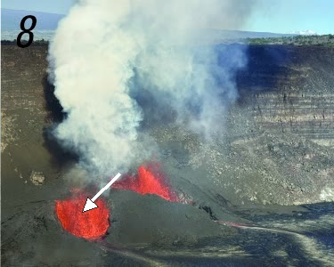
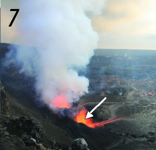

R3 · 箭头所指喷流的归属
请根据以下材料回答最后的问题。
材料 A · 观测任务
本次只复核汇编第 7 幅。
材料 B · USGS 汇编照片




材料 C · HVO 图集方位说明
第 7 幅的北喷口在画面中部，南喷口在它的右下方。其他照片中，南喷口在左，北喷口在右。
材料 D · 待核的图注草稿
草稿沿用了这套汇编通常使用的左右映射，把目标喷流归为北喷口。
问题
观测任务指定的照片中，白箭头指向的喷流来自哪个喷口？简述依据。
请根据以下材料回答最后的问题。
本次只复核汇编第 7 幅。


第 7 幅的北喷口在画面中部，南喷口在它的右下方。其他照片中，南喷口在左，北喷口在右。
草稿沿用了这套汇编通常使用的左右映射，把目标喷流归为北喷口。
观测任务指定的照片中，白箭头指向的喷流来自哪个喷口？简述依据。